Как устроены наши серии: сильные стороны каждого референса, собранные в один механизм поверх стиля Nobody Gets In; сезон из 4–5 серий и сборка-фильм с расширенными сценами; стиль-кадры, которые я нарисовал своим движком; конвейер, по которому я делаю видео целиком сам.
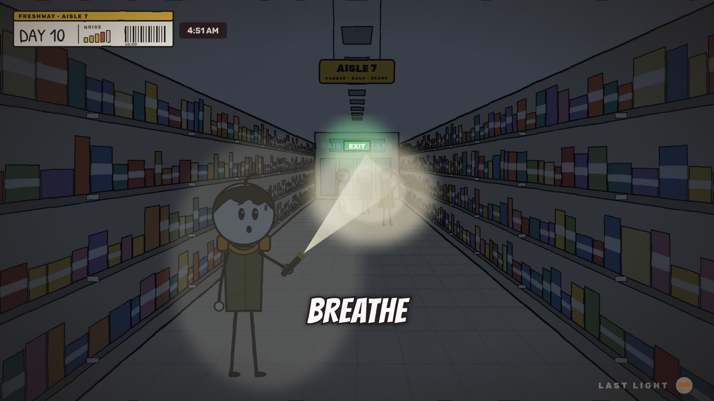
«They hear. They don't see.» Мертвецы реагируют только на звук. Это одно правило связывает всё, чем мы отличаемся: шкалу шума в HUD, POV-сцены, где зритель сам вслушивается, тишину в звуке и сюжетные ловушки (будильники, двери, сигнализации). У Nobody Gets In правило в каждой серии новое. У нас оно одно на сезон и с каждой серией раскрывается глубже.
Чего не берём: статичные картинки на 4+ секунды (Beanie), стену слов на 190 в минуту без пауз (One More Day), сведение без музыки и тихое −25 LUFS.
Каждая серия собирается из восьми деталей. Если какой-то нет, серия не готова к записи.
| Деталь | Что это | Пример (сезон «Freshway») |
|---|---|---|
| 1. Хук | Две фразы: ситуация и поворот. Первое слово на первой секунде | «Automatic doors open for anything that walks up to them. Tonight one of them doesn't walk.» |
| 2. Системы локации | 3–4 реальные системы здания, на которых строятся задачи и решения | Ставни, морозильная камера, пожарный выход на магните, музыка в торговом зале |
| 3. Задачи | «Problem 1–4»: свет, вода, еда, двери, люди. Каждая решается физикой здания | Морозильник держит холод 48 часов → переносишь всё мясо внутрь и запечатываешь |
| 4. Правила героя | Выводы, которые герой делает сам, и их перечень в конце | «Rule 1: They hear. They don't see. Rule 2: Music is a dinner bell» |
| 5. Мотив-перекличка | Повторяющаяся деталь, которая каждый раз значит больше | Будильник на 7:00, который кто-то каждую ночь заново заводит |
| 6. Живая угроза | Человек опаснее мертвецов | Охранник торгового центра, который «помогает» по рации |
| 7. Улики и твист серии | 2–3 детали, которые финальная фраза серии переворачивает | Голос по рации знает то, чего не мог видеть |
| 8. Тайна сезона | Один вопрос на всю арку: в каждой серии новая улика, ответ в финале сезона | Кто каждую ночь заводит будильник? |
Один сезон — одна локация и 30 дней. Каждая серия закрывает свою неделю, свою задачу и свой твист, но оставляет открытой тайну сезона. После последней серии выходит фильм.
По данным ниши лучше всего сейчас работают 8–10 минут: два лидера держат именно эту длину, а каналы с роликами по 17–27 минут собирают в разы меньше. 15 минут — рискованная зона, но не провальная (у Beanie серии по 9–13,5 минуты набирают 100–600K). Предлагаю 13–15 минут, построенные как три акта по 4–5 минут, у каждого свой мини-финал. Если по аналитике пилота удержание просядет на 8–9 минуте, вторая серия будет короче.
Канал Линча я посмотреть не смог: YouTube в моём окружении закрыт, а лимит NexLev на эту неделю исчерпан до 3 ноября. Делаю по вашему описанию, а подтверждение из ниши есть: у Kit vs The End часовая склейка (141K) обогнала лучший отдельный эпизод (42K), у Stick Through Collapse 32-минутная склейка набрала 82K против ~9,5K у частей.
Zombie Outbreak: 30 Days Locked Inside a Supermarket — Ep. 1: The Night Shift (Day 0–7). Бренд-префикс и «30 days» узнаются в поиске, номер эпизода и дни в скобках сразу показывают сериал, как у Beanie.
| Время | Блок | Что на экране |
|---|---|---|
| 0:00 | Холодное POV-открытие 5–10 с, без рассказчика | Леттербокс, звук мира, подписи звуков |
| 0:08 | Хук из двух фраз | Пословные субтитры, HUD появляется |
| 0:20 | Обещание удержания + тайна сезона (одна строка) | Деталь-загадка крупно |
| 0:40 | Акт 1: сеттинг, правило мира, Problem 1 → решение | Карта, схема, карточка PROBLEM |
| 2:30 | Problem 2 + факт + дашборд припасов | Карточка-факт, SUPPLIES |
| 3:30 | Вылазка | POV-сцена №2, шкала шума растёт |
| 4:30 | Мини-финал акта 1, RULE 1 | Тёмная карточка с жёлтым тегом |
| 5:00 | Акт 2: живой человек, улика 1, мотив входит в быт | Голос через рацию или динамик |
| 7:00 | Катастрофа середины, вопрос в комментарии | Комикс-звукоподражание, экшен |
| 8:30 | Привязанность и юмор, улика 2, мини-финал акта 2 | Тёплый свет, тихая сцена |
| 9:30 | Акт 3: план, ложная надежда | Карта с маршрутом, будильники-приманки |
| 11:30 | Кульминация | POV-сцена №3, музыка обрывается в тишину |
| 12:40 | Твист серии: одна фраза переворачивает улики | Крупный план реакции |
| 13:15 | Инвентарь, правила, новое правило | Карточка инвентаря |
| 13:40 | Клиффхэнгер: новая улика тайны сезона | Последний кадр без субтитров, звук |
| 13:55 | Конечная заставка: «Day 8?», следующая серия | Карточка эпизода |
ПРИМЕР · холодное открытие Ep. 1 · 0:00–0:12
[POV, леттербокс. Тёмный склад. Гул холодильников. Дыхание близко.]
[Где-то в зале щёлкает радио магазина: «…attention shoppers…». Шаги, много шагов, все идут на звук.]
[Рука находит выключатель. Щелчок. Тишина. Шаги останавливаются.]
[Склейка в 2D, HUD, музыка входит]
Рассказчик: They don't see you. They hear you. And the store radio just told them where you are.
Все кадры ниже нарисованы кодом моего движка: каждый персонаж, предмет и декорация описаны геометрией. Из этого же кода будут делаться анимационные кадры роликов, поэтому эти картинки заодно проверяют сам конвейер. Это первая итерация стиля, её можно править.
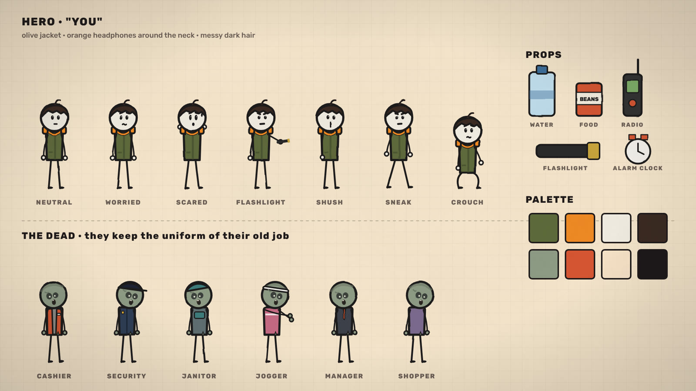
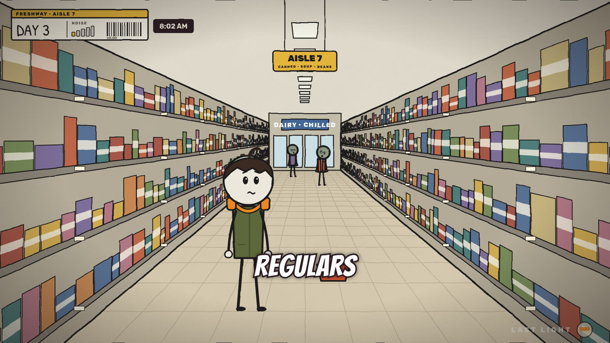
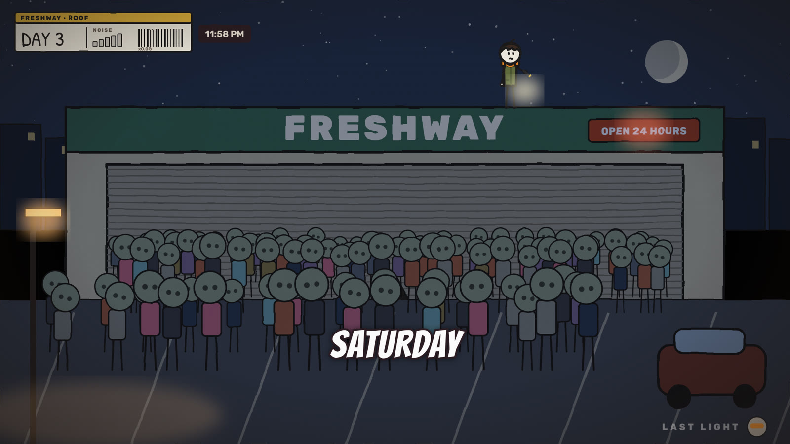
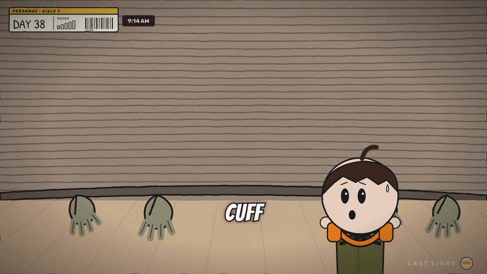
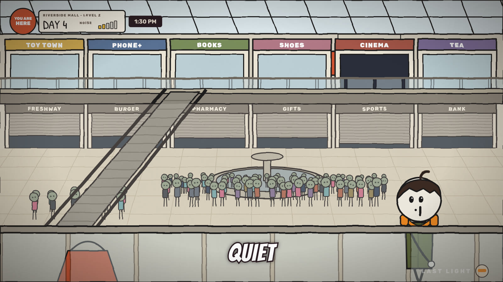
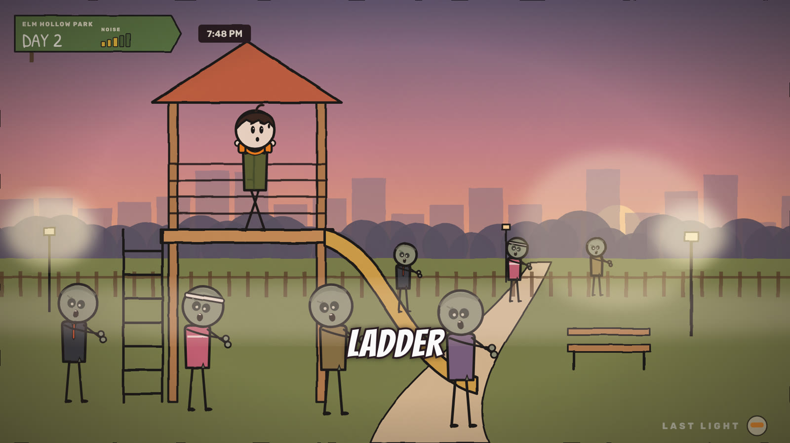
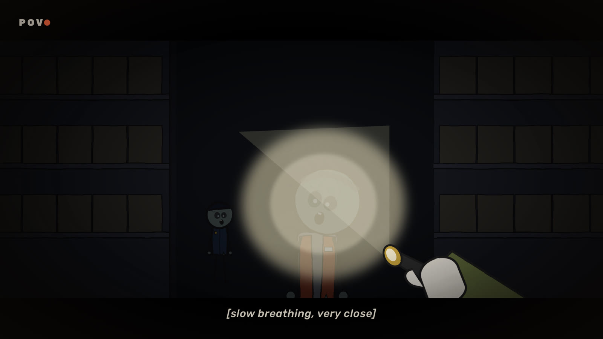
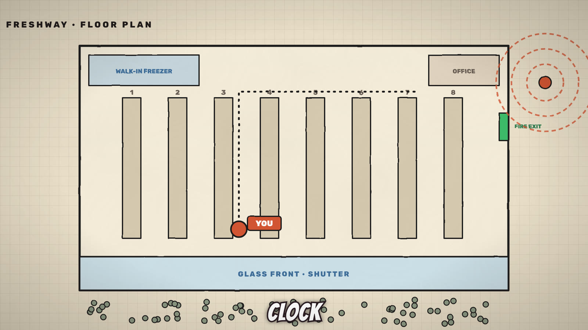
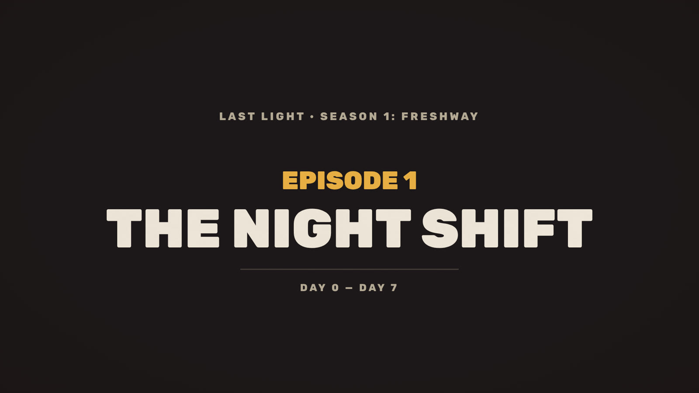
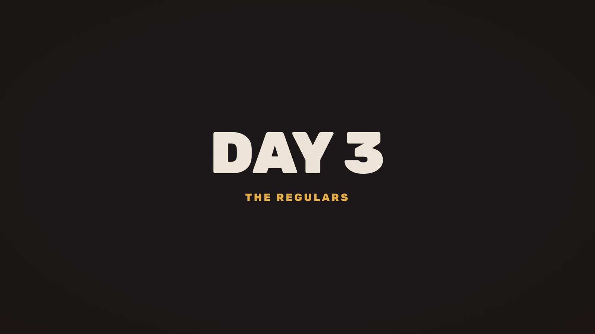
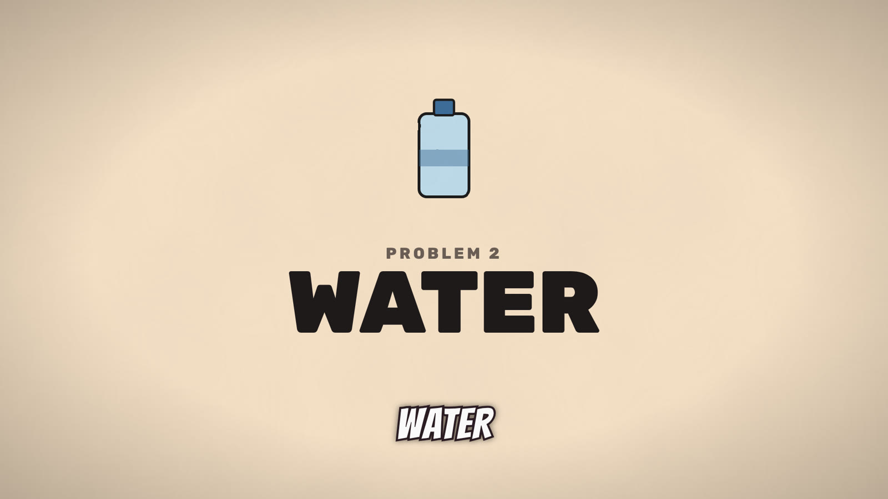
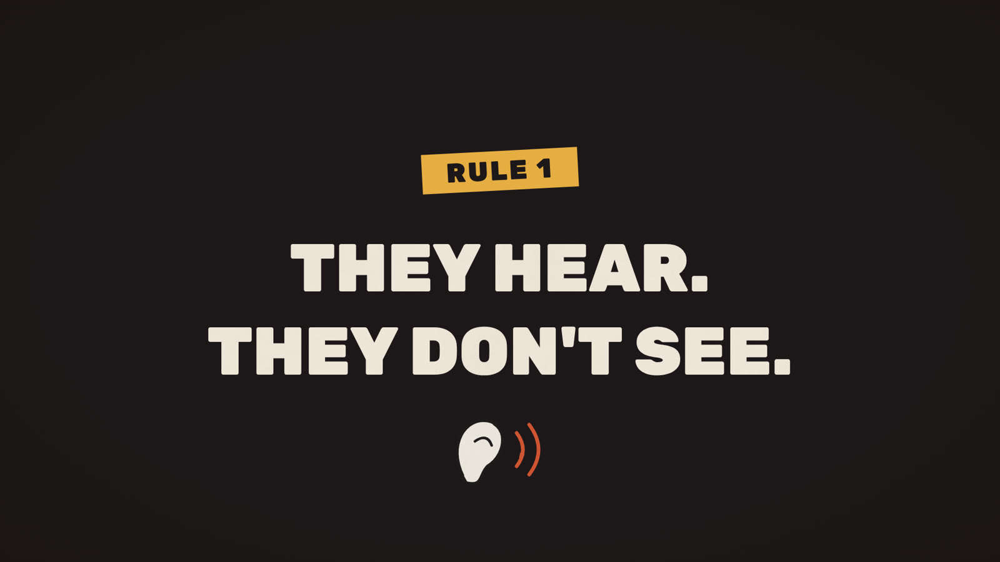
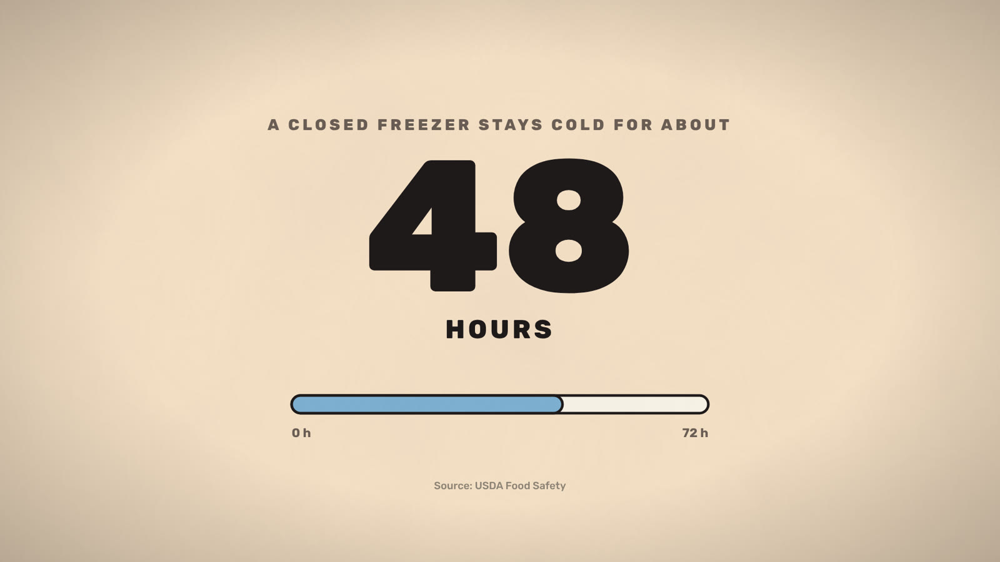
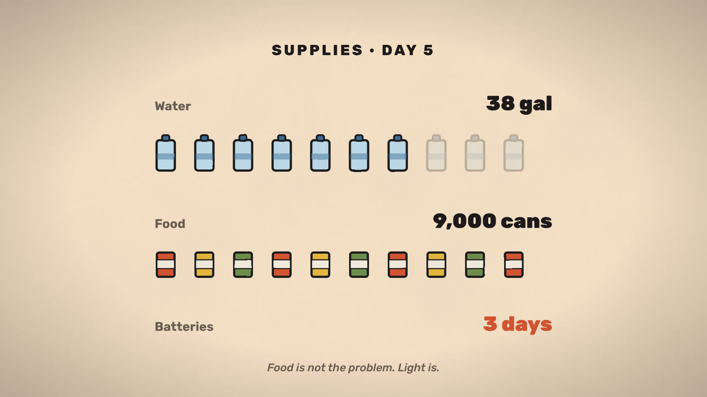
Что уже видно и что дорабатывать: мертвецы пока немного «мультяшнее», чем у Nobody Gets In; в анимации добавятся покачивание, моргание, ходьба и шаткий наклон головы. Толпы будут гуще и разнообразнее. Субтитры в кадрах статичны, в видео они идут по одному слову синхронно с голосом.
| Этап | Что делаю я | Что делаете вы |
|---|---|---|
| 1. Идея сезона | 3 варианта: локация, правило, тайна, твисты серий | Выбираете и правите |
| 2. Сценарий серии | Текст ~2 000–2 300 слов с разметкой планов, POV и карточек | Утверждаете |
| 3. Раскадровка | Список планов: декорация, позы, камера, длительность | Смотрите ключевые кадры |
| 4. Голос | Синтез речи с таймкодами слов (для субтитров и монтажа) | Выбираете голос |
| 5. Анимация | Рендер всех планов движком: риги, камера, свет, графика, субтитры | — |
| 6. Звук | Музыка, атмосфера, эффекты, сведение в −14 LUFS | — |
| 7. Аниматик и финал | Сначала 60-секундный тест, потом серия целиком в MP4 1080p | Даёте правки |
| 8. Упаковка | Название, описание с главами и источниками, варианты превью | Публикуете |
Когда ответите, пишу сценарий первой серии и делаю 60-секундный анимированный тест: холодное POV-открытие, хук, первый план с HUD и субтитрами, с голосом и звуком. По нему проверим стиль в движении до того, как браться за 15 минут.